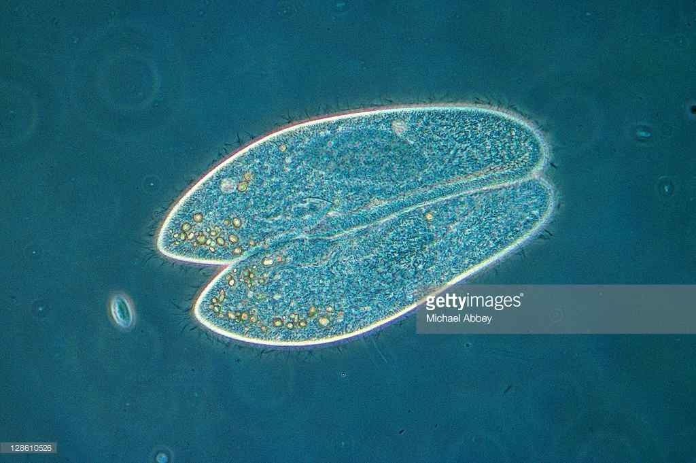

문제 2
나현이는 짚신벌레 배양용 액체배지 1L에 짚신벌레 (*Paramecium caudatum*) 1,000마리를 넣고 37도에서 배양하면서 짚신벌레 개체 수가 어떻게 변하는지 관찰하였다. 짚신벌레는 이분법으로 번식하는 원생생물이다. [50점]

2-1
(가) 이틀마다 배양액 0.1mL를 채취하여 여기에 들어있는 짚신벌레 개체수를 측정하였다. 짚신벌레 개체 수가 어떻게 달라질 것인지 예측하고 그 이유를 설명하시오. [25점]
2-2
(나) 짚신벌레와 애기짚신벌레(*P. aurelia*)는 먹이도 같고 최적 생존 및 번식 환경도 동일하다. 이 두 종을 짚신벌레 배양용 배지가 든 시험관에 같이 넣고 배양하면 시간이 지나면서 각각의 개체 수가 어떻게 되겠는지 예측하고 그 이유를 설명하시오. [25점]